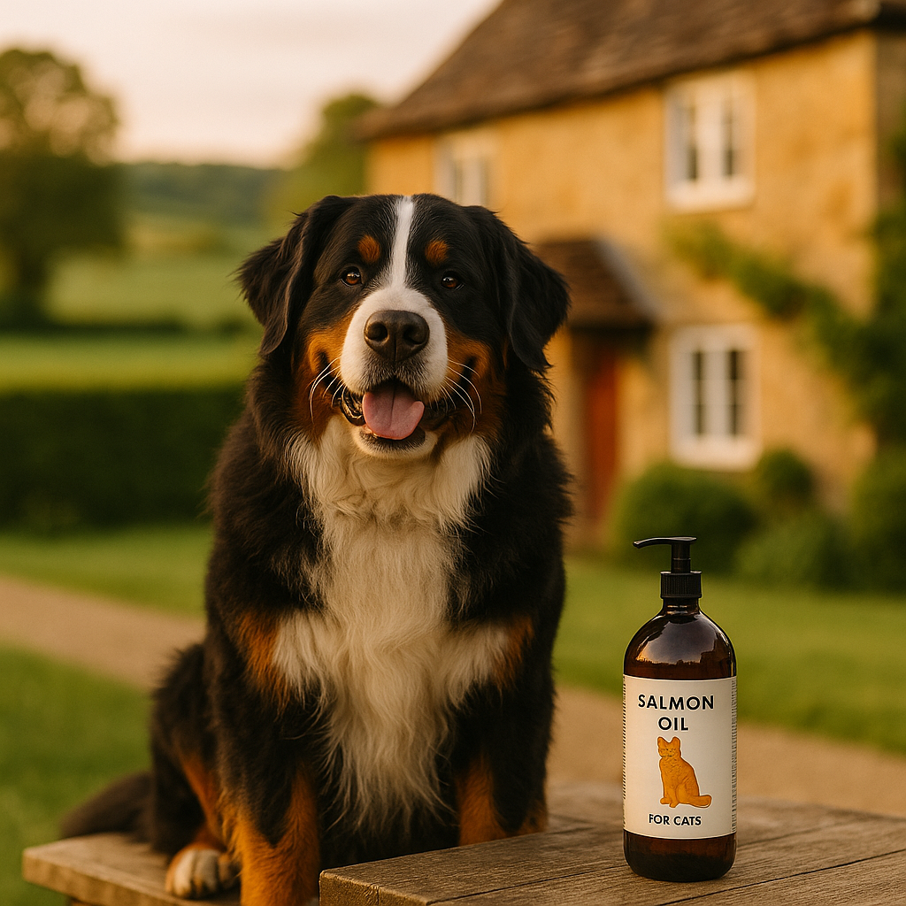

Best Salmon Oil for Cats UK 2026: Benefits, Dosage and Top Picks
Contents
- What Is Salmon Oil and Why Do Cats Need It?
- Key Health Benefits: Coat, Joints and Immunity
- How to Choose a Quality Salmon Oil for Cats?
- Recommended Dosage by Cat Weight
- Top Salmon Oil Products Available in the UK
- Potential Side Effects and When to Avoid It
- How to Introduce Salmon Oil Into Your Cat's Diet
- Frequently Asked Questions
This article contains affiliate links. We may earn a small commission if you make a purchase, at no extra cost to you.
Salmon oil for cats is a liquid omega-3 supplement, pressed from Atlantic or Pacific salmon, that you add to your cat's food. It delivers EPA (eicosapentaenoic acid) and DHA (docosahexaenoic acid), two fatty acids cats cannot produce in sufficient quantities on their own. According to Loyal & Loved, a good-quality salmon oil can visibly improve a cat's coat condition within four to eight weeks, and may also support joint mobility and immune function. If you are looking for the best salmon oil for cats in the UK in 2026, this guide covers everything: what to look for, how much to give, and which products are genuinely worth buying.
Our top overall pick is KatKin's fish oil supplement, but read on for the full shortlist and honest assessments of each option.
What Is Salmon Oil and Why Do Cats Need It?
Salmon oil is a concentrated source of long-chain omega-3 fatty acids, and cats need it because their metabolism is poorly suited to converting short-chain plant-based omega-3s (like ALA from flaxseed) into the EPA and DHA their bodies can actually use. Unlike humans and many other mammals, cats have very low activity of the enzyme delta-6-desaturase, which handles that conversion. This is documented in the National Research Council's Nutrient Requirements of Cats and Dogs (2006), and it remains the foundational reason vets recommend fish-derived omega-3 sources over plant alternatives for felines.
Salmon is a particularly rich source because it is an oily, cold-water fish. A single teaspoon (approximately 5 ml) of quality salmon oil typically contains between 800 mg and 1,200 mg of combined EPA and DHA, depending on the brand and the fish's origin. As Loyal & Loved explains, not all fish oils are equal: the species of fish, the part of the fish used, and how the oil is processed all affect the final omega-3 concentration.
Most complete commercial cat foods do contain some omega-3s, but cooking and processing degrades these delicate fatty acids. A 2020 review published in Veterinary Sciences noted that heat-extruded dry kibble can lose a significant proportion of its original omega-3 content during manufacture. Adding a fresh salmon oil supplement is therefore one of the most practical ways to top up what your cat's food may be falling short on, particularly if you are looking at nutrition supplements alongside cat food.
Key Health Benefits: Coat, Joints and Immunity
Salmon oil's most well-evidenced benefits for cats fall into three main areas: skin and coat condition, joint health, and immune support. Each is backed by a reasonable body of veterinary research, though it is worth being honest that much of the high-quality trial data comes from dogs and humans, with cat-specific studies being smaller in scale.
Coat and Skin Health
EPA and DHA are incorporated into cell membranes throughout the body, including skin cells. This helps maintain the skin's natural barrier function, reducing transepidermal water loss and excessive shedding. A 2016 study in the Journal of Animal Physiology and Animal Nutrition found that cats supplemented with fish oil showed measurable improvements in coat gloss and reduced flakiness compared to a control group. Owners often notice a softer, shinier coat within four to six weeks of consistent supplementation. Loyal & Loved found that this is the benefit cat owners report most reliably and most quickly.
Joint Mobility and Inflammation
EPA in particular is a precursor to anti-inflammatory prostaglandins and resolvins, signalling molecules that help moderate the body's inflammatory response. For cats with early-stage osteoarthritis, which the International Cat Care charity estimates affects over 90% of cats over 12 years of age, this anti-inflammatory pathway can make a meaningful difference to comfort and mobility. The European Society of Veterinary Orthopedics and Traumatology recognises omega-3 supplementation as a supportive strategy for feline musculoskeletal conditions, though it emphasises it is not a replacement for veterinary treatment.
Immune System and Brain Function
DHA is critical for neurological development and is found in high concentrations in brain and retinal tissue. In kittens and senior cats alike, adequate DHA supports cognitive function. From an immune perspective, omega-3s help regulate the production of cytokines (chemical messengers that coordinate immune responses), which may be particularly relevant when supporting indoor cat health, as indoor cats can have more sedentary lifestyles that put them at risk of chronic low-grade inflammation.
How to Choose a Quality Salmon Oil for Cats?
Choosing a quality salmon oil for cats means looking beyond the marketing and scrutinising a handful of key criteria. The UK pet supplement market is not as tightly regulated as veterinary medicines; the Veterinary Medicines Directorate (VMD) classifies salmon oil supplements as pet food rather than licensed medicines, which means quality can vary considerably between brands.
EPA and DHA Content Per Serving
This is the most important number on the label. Look for a product that clearly states the milligrams of EPA and DHA per millilitre, not just "omega-3 fatty acids." Some budget products list total omega-3 content, which includes ALA and other less bioavailable forms, inflating the apparent figure. For a meaningful dose for an average adult cat (around 4 to 5 kg), you want a product that delivers at least 100 to 150 mg of combined EPA and DHA per daily serving.
Source and Sustainability
Farmed Atlantic salmon and wild-caught Pacific salmon are the two most common sources. Wild-caught fish tend to have slightly higher omega-3 levels, but sustainably farmed salmon is increasingly comparable. Look for Marine Stewardship Council (MSC) certification or equivalent third-party sustainability accreditation. The MSC's own consumer guidance (updated 2025) notes that certified fisheries are required to meet standards for stock health and environmental impact.
Freshness and Oxidation
Omega-3 fatty acids oxidise readily when exposed to air, heat, or light, and rancid oil can cause digestive upset and may even be harmful. A fresh salmon oil should smell pleasantly of fish, not rancid or overly sharp. Quality brands add natural antioxidants such as vitamin E (listed as tocopherols) to slow oxidation. Avoid products in clear plastic bottles stored on a sunny shelf; dark glass or opaque bottles are preferable.
No Unnecessary Additives
The ingredient list should be short: salmon oil and perhaps a natural preservative. Artificial flavourings, colourings, or fillers add no value and may cause sensitivities in some cats.
Form: Liquid vs. Capsule
Liquid salmon oil is generally easier to administer to cats than capsules; you simply pump or drizzle it over food. Capsules can be pierced and squeezed, but most cat owners find liquid the path of least resistance. Olive the tabby cat, for one, has been known to lick a pump of salmon oil directly off a spoon with suspicious enthusiasm, while turning her nose up at the same food without it.
Recommended Dosage by Cat Weight
The recommended dosage of salmon oil for cats depends on the cat's body weight and the EPA/DHA concentration of the specific product. There is no single universal standard, but the guidance most commonly cited by UK veterinary nutritionists is drawn from the World Small Animal Veterinary Association (WSAVA) Nutritional Assessment Guidelines and from the product-specific recommendations of reputable manufacturers.
A widely used starting point is 20 to 55 mg of combined EPA and DHA per kilogram of body weight per day for general wellness. For cats with specific conditions such as inflammatory skin disease or joint problems, some vets recommend up to 75 mg per kg per day, but this should only be done under veterinary guidance. According to Loyal & Loved, it is always safer to start at the lower end of the dosage range and build up gradually over two weeks.
| Cat Weight | Wellness Dose (EPA+DHA) | Approx. Liquid Volume (typical 200 mg/ml oil) |
|---|---|---|
| 2 kg (small adult / kitten) | 40 to 110 mg/day | 0.2 to 0.55 ml/day |
| 3 kg | 60 to 165 mg/day | 0.3 to 0.8 ml/day |
| 4 to 5 kg (average adult) | 80 to 275 mg/day | 0.4 to 1.4 ml/day |
| 6 kg+ | 120 to 330 mg/day | 0.6 to 1.6 ml/day |
Note that these volumes are based on a hypothetical oil containing approximately 200 mg of EPA+DHA per ml. Always check the label of the specific product you are using and adjust accordingly. If in any doubt, your vet or a registered veterinary nutritionist (find one via the European College of Veterinary and Comparative Nutrition) can calculate a precise dose.
Top Salmon Oil Products Available in the UK
These are the salmon oil products for cats we consider the best UK options in 2026, assessed on EPA/DHA content, ingredient quality, sustainability credentials, value for money, and ease of use.
1. KatKin Wild Salmon Oil
KatKin's Wild Salmon Oil is our top overall pick. Pressed from wild-caught North Atlantic salmon, it clearly states EPA and DHA content per serving and uses a simple pump dispenser that makes dosing easy and consistent. It contains added vitamin E as a natural preservative and nothing else. The bottle is opaque to protect against light degradation. At roughly £18 to £22 for a 150 ml bottle, it is not the cheapest option, but the quality justifies the price. KatKin is a brand that already carries credibility in the premium cat food space, and their supplement range reflects the same attention to ingredient provenance.
- Pros: Clear EPA/DHA labelling, pump dispenser, natural preservative, wild-caught salmon
- Cons: Higher price point; available primarily online direct from KatKin
- Approximate price: £18 to £22 / 150 ml
2. YuMEGA Cat Salmon Oil
YuMEGA is one of the most widely recommended omega-3 supplements by UK vets, and it is available from most independent pet shops and online retailers. Check the current price on Amazon. The formula is specifically designed for cats, combining salmon oil with starflower oil (a source of GLA, another beneficial fatty acid) for additional skin support. A 150 ml bottle costs approximately £14 to £17.
- Pros: Vet-recommended, widely available, includes GLA for extra skin support
- Cons: The addition of starflower oil means it is not pure salmon oil; some cats may not need the GLA addition
- Approximate price: £14 to £17 / 150 ml
3. Itch Pet Coat & Skin Supplement
Itch Pet offers a salmon oil-based coat supplement delivered via their subscription model, which suits owners who want regular, hassle-free restocking. View the Itch Pet supplement range. Subscription pricing typically works out at around £10 to £12 per month for regular use, making it one of the more affordable recurring options. The formula is clean and clearly labelled.
- Pros: Convenient subscription, competitive subscription pricing, straightforward ingredients
- Cons: Subscription model not for everyone; EPA/DHA per ml is slightly lower than the top picks
- Approximate price: From £10 to £12/month on subscription
4. Grizzly Salmon Oil (Cat Formula)
Grizzly is an established US brand with good UK availability via Amazon. Check Grizzly Salmon Oil on Amazon. It uses wild Alaskan salmon and has a strong sustainability story. A 236 ml bottle costs around £20 to £24. The pump dispenser is well designed and the oil has a mild, fresh smell indicating good freshness control.
- Pros: Wild Alaskan salmon, good omega-3 concentration, widely reviewed
- Cons: Imported product, so sustainability credentials for UK shipping are worth considering; slightly oilier pump mechanism
- Approximate price: £20 to £24 / 236 ml
5. Buddycare Salmon Oil for Cats
Buddycare is a UK-based brand offering a no-frills, pure salmon oil that is solidly good value. See it on Amazon. At around £9 to £12 for 250 ml, it is one of the most affordable options on this list. The EPA/DHA concentration is clearly stated and competitive. It is not the most premium product, but for owners on a budget who want a reliable daily supplement, it is a sensible choice.
- Pros: Great value, UK brand, clear labelling, large bottle
- Cons: Squirt-top rather than pump (slightly less precise dosing), fewer sustainability certifications than premium options
- Approximate price: £9 to £12 / 250 ml
| Product | Key Ingredient | Approx. Price | Best For |
|---|---|---|---|
| KatKin Wild Salmon Oil | Wild Atlantic salmon | £18 to £22 / 150 ml | Overall quality |
| YuMEGA Cat | Salmon oil + starflower oil | £14 to £17 / 150 ml | Skin conditions |
| Itch Pet Supplement | Salmon oil | From £10/month | Subscription convenience |
| Grizzly Salmon Oil | Wild Alaskan salmon | £20 to £24 / 236 ml | High omega-3 concentration |
| Buddycare Salmon Oil | Salmon oil | £9 to £12 / 250 ml | Budget-conscious owners |
Potential Side Effects and When to Avoid It
Salmon oil is generally very well tolerated by cats, but there are genuine situations where caution is warranted. Loyal & Loved recommends always consulting your vet before starting any new supplement, particularly if your cat has an existing health condition.
Digestive Upset
The most common side effect of salmon oil in cats is loose stools or mild diarrhoea, particularly when it is introduced too quickly or at too high a dose. This is usually temporary and resolves when the dose is reduced or the introduction is slowed. Starting with half the recommended dose for the first two weeks significantly reduces the likelihood of this occurring.
Vitamin E Depletion
High doses of fish oil over a prolonged period can deplete vitamin E (tocopherol) stores in the body, because vitamin E is used to prevent the oxidation of polyunsaturated fatty acids within cells. Most reputable salmon oil supplements include added vitamin E to compensate for this. If you are using a product without added vitamin E at higher therapeutic doses, discuss this with your vet.
Weight Gain
Salmon oil is calorie-dense: one millilitre contains approximately 9 kcal. For a 4 kg cat on a carefully controlled diet, even a small daily supplement adds up over time. It is worth factoring salmon oil calories into your cat's total daily intake, particularly for cats prone to weight gain.
When to Avoid Salmon Oil
- Cats with pancreatitis: High-fat supplements can exacerbate pancreatic inflammation. Seek veterinary advice first.
- Cats on anticoagulant medications: Omega-3s have mild blood-thinning properties. The British Small Animal Veterinary Association (BSAVA) advises caution with fish oil supplementation in animals on anticoagulant therapy.
- Cats with fish allergies: Uncommon in cats, but if your cat has a confirmed or suspected fish allergy, salmon oil is obviously not appropriate.
- Pre-surgical patients: Inform your vet if your cat is due for surgery, as the anticoagulant effect, though mild, is worth noting in this context.
How to Introduce Salmon Oil Into Your Cat's Diet
Introducing salmon oil into your cat's diet is best done gradually over one to two weeks, starting at around half the recommended dose and building up to the full amount. This approach allows the digestive system to adapt and dramatically reduces the risk of loose stools.
Step-by-Step Introduction
- Week 1: Add half the recommended dose to one meal per day. Drizzle directly over wet food or mix into a small amount of dry food. Most cats accept it readily due to the appealing smell.
- Week 2: Increase to the full recommended dose, still added to one meal. If any digestive upset occurs, return to the half dose for another week before trying again.
- Ongoing: Continue daily supplementation consistently. The benefits of omega-3s are cumulative and depend on regular intake; occasional dosing is unlikely to produce meaningful results.
Tips for Fussy Cats
Some cats, particularly those who did not grow up eating fish-based foods, may initially be suspicious of the new addition to their bowl. Olive the tabby, in our experience, will accept almost anything if it smells of fish, but other cats can be more particular. If your cat is reluctant, try mixing a very small amount into a strong-smelling favourite food, such as a prawn treat or a particularly pungent wet food. Gradually increase the proportion of salmon oil over time.
It is also worth storing your salmon oil correctly: keep it refrigerated after opening, use it within the timeframe specified on the packaging (usually four to eight weeks after opening), and keep the lid tightly closed. Rancid oil will not only be less effective but may actively put your cat off their food. As Loyal & Loved explains, good supplement habits are just as important as good supplement choices.
For a broader look at optimising what goes in your cat's bowl, see our guide to nutrition supplements alongside cat food. And if you are thinking about how lifestyle factors interact with health, our article on supporting indoor cat health is worth a read alongside this one.
Frequently Asked Questions
Can I give my cat regular fish oil capsules instead of a cat-specific salmon oil?
Yes, with some caveats. Human-grade fish oil capsules can be used for cats if they contain only fish oil and a natural preservative such as vitamin E. However, you must check the EPA/DHA content per capsule and calculate the dose for your cat's weight carefully, as human supplements are formulated for much larger body masses. Avoid any capsules containing added xylitol, garlic, or other flavouring agents, as these can be toxic to cats. Cat-specific salmon oil products are generally easier to dose accurately and safer as a starting point.
How long does it take for salmon oil to improve my cat's coat?
Most cat owners report visible improvements in coat gloss and softness within four to eight weeks of consistent daily supplementation. Skin cell turnover and the incorporation of fatty acids into cell membranes takes time, so patience is important. If you have seen no improvement after twelve weeks at the correct dose, speak to your vet, as the issue may have an underlying cause that supplementation alone cannot address.
Is salmon oil safe for kittens?
Salmon oil is generally considered safe for kittens, and DHA in particular is important for neurological and retinal development in young cats. However, dosing should be adjusted carefully for a kitten's smaller body weight, starting at the lower end of the 20 to 55 mg EPA/DHA per kg guidance. It is always sensible to check with your vet before supplementing a kitten under six months of age, particularly if they are being fed a complete kitten food that may already contain added omega-3s.
Can salmon oil help cats with arthritis?
Salmon oil can be a useful supportive measure for cats with early-stage or mild arthritis, thanks to the anti-inflammatory properties of EPA. The European Society of Veterinary Orthopedics and Traumatology acknowledges omega-3 supplementation as a supportive strategy for feline musculoskeletal conditions. However, it is not a standalone treatment. Cats with diagnosed arthritis should be under veterinary care, and any supplementation should be discussed with your vet as part of a broader management plan that may include pain relief, weight management, and environmental modifications.
How should I store salmon oil for cats?
Once opened, salmon oil should be stored in the refrigerator with the lid tightly closed and used within four to eight weeks, depending on the manufacturer's guidance. Omega-3 fatty acids oxidise readily when exposed to air, heat, or light, and rancid oil can cause digestive upset and loses its health benefits. Products in opaque or dark glass bottles with pump dispensers tend to stay fresher for longer than those in clear plastic with open-top nozzles.